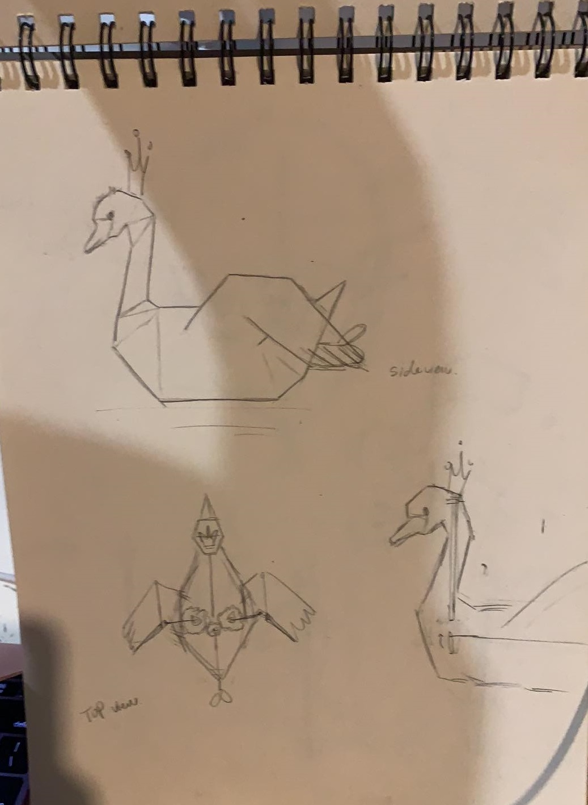
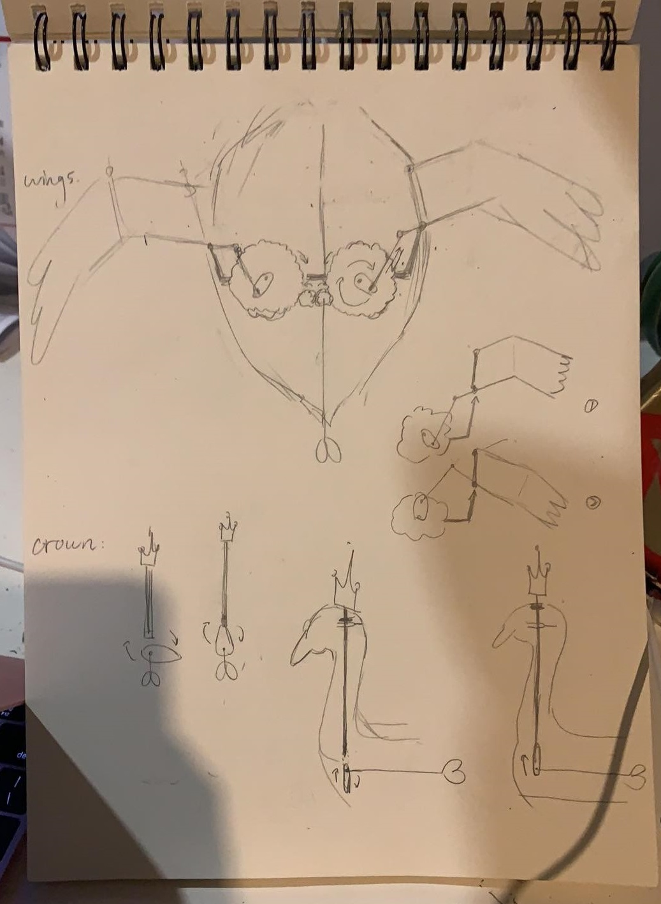
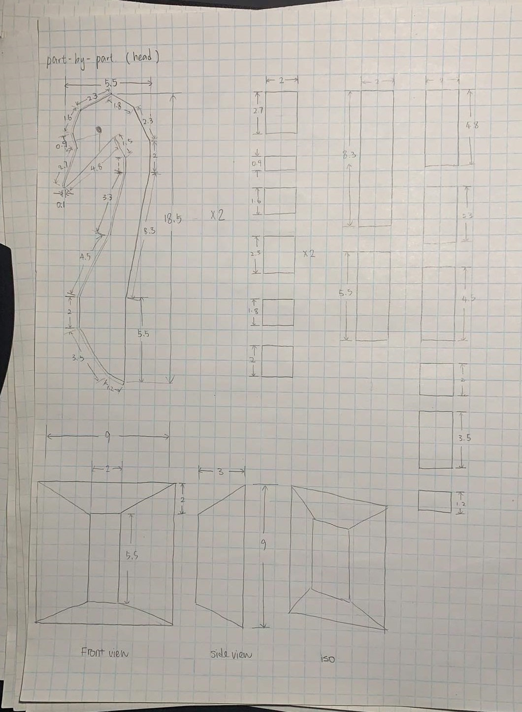
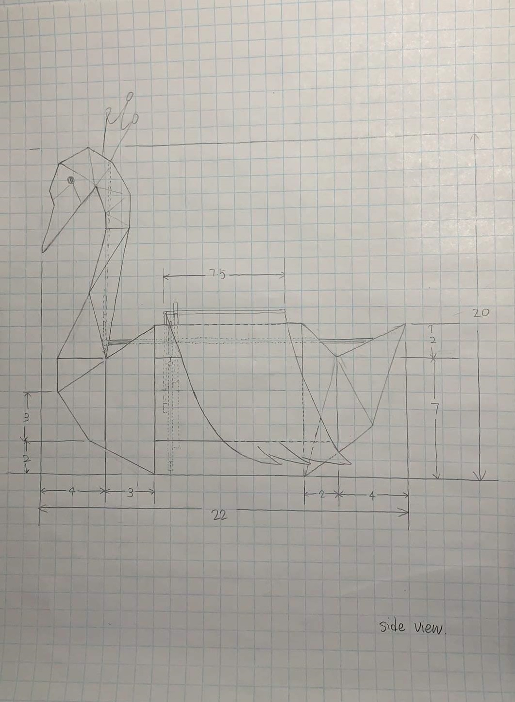
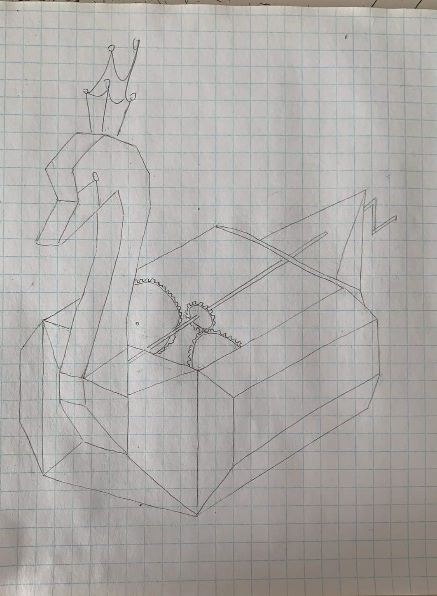

Overview
We had 4 weeks allotted to complete the project and the deliverables included orthographic and isometric sketches, a digital 3D model and a final physical model of the ABM. We were expected to submit different parts of the project each week which made the process fairly smooth. For my part, I came up with the initial design idea and working mechanism of our ABM and worked on the entire digital model by myself. At the end, me and my partner got together to work on the physical assembly of the model together. This course taught me to think of objects in a 3d space by requiring me to sketch them in different visual representations such as orthographic and isometric sketches.
Process
Week 1 - Ideation
To start off with the project, we had to brainstorm some ideas and create rough sketches as a team. After a while of pitching ideas, I came of the idea of a swan because we were looking for beauty and elegance in the form of a machine at the same time, we didn’t want our project to become too complex. Also, by being inspired by a YouTube video, I wanted to create a flapping motion using the 4-bar linkage mechanism inside the wings.


Week 2 - Sketches
After finalizing our design, we started creating orthographic and isometric sketches to get a better idea of how the housing as well as the mechanism would look like. We decided to use 3 gears rotated by a crank road to achieve the wing motion and a cam/rod mechanism to make the crown move up and down. My partner was mostly in charge of the sketches because she wasn’t as comfortable with digital model making as I was.



Week 3 - Solid Works Model
Using the drawings created by my team, I began to create digital version of the parts separately of the ABM. Creating the parts was easy because we had already put down all the dimensions in the sketches, although, creating the head of the swan took a lot of time because of it having so many edges. However, the main challenge I faced was assembling together the parts using mates. One example was getting the gears to rotates using the crank mechanism. The built-in gear mate wasn’t allowing me to rotate the gears along the axis of the rod, so to fix this I created a circular path around each gear and created a mate between the circular paths. This made the gears function exactly how I wanted it to.


Week 4 - Physical Model
Finally, after completing all other parts of the submission, we began to produce the physical assembly of the ABM using different materials. We used cardboard for the housing and had all the mechanical parts laser-cut. We even decided to have the head laser cut since it produced highly clean cuts. The main problem we encountered during the assembly was to make the cam/rod mechanism of the crown work. Initially, we thought about using the laser-cut cam to spin around and push the rod up and down. However, the cam turned out to be too narrow which caused the rod to get stuck at the end of it. We then tried using an extra gear and attach it to the end of the rod to give it more room to catch the cam. However, the friction between the laser-cut cam and gear was too high so the motion wasn’t smooth enough. So, I suggested to add a flap and stick the end of the rod to it with glue, this produced a far smoother rotation and made the interaction with the ABM pleasant.
Reflection
Going into this course, I was worried I would struggle with the deliverables due to lack of sketching skills. However, I was able to quickly learn from the numerous sketching exercises required earlier in the course. Since this was mt first time working with 3D modelling I didn’t have high expectation of myself to achieve a project of the highest standard, however, the project turned out really well and I was proud of the components I created. I learn that much of the success came from teamwork and good communication between my partner and myself. I really enjoyed this project because it made me realize I wanted to go further in model making.